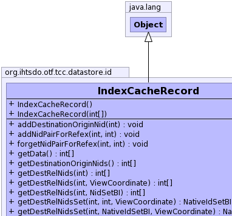
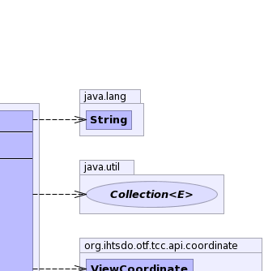
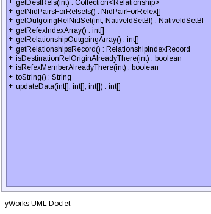
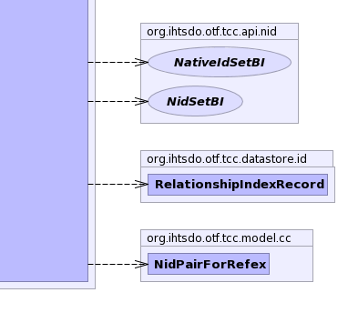

public class IndexCacheRecord extends Object
RelationshipIndexRecord for documentation of the structure of
the relationship index data.RelationshipIndexRecord|  |  |
|  |  |
| Constructor and Description |
|---|
IndexCacheRecord() |
IndexCacheRecord(int[] data) |
public IndexCacheRecord()
public IndexCacheRecord(int[] data)
public boolean isRefexMemberAlreadyThere(int memberNid)
public boolean isDestinationRelOriginAlreadyThere(int originNid)
public void addDestinationOriginNid(int originNid)
public void addNidPairForRefex(int refexNid,
int memberNid)
public void forgetNidPairForRefex(int refexNid,
int memberNid)
public int[] updateData(int[] relationshipOutgoingData,
int[] destinationOriginData,
int[] refexData)
public int[] getData()
public int[] getDestRelNids(int cNid)
throws IOException
IOExceptionpublic int[] getDestRelNids(int cNid,
NidSetBI relTypes)
throws IOException
relTypes - IOExceptionpublic NativeIdSetBI getDestRelNidsSet(int cNid, NativeIdSetBI relTypes, ViewCoordinate vc) throws IOException, ContradictionException
cNid - relTypes - IOExceptionContradictionExceptionpublic NativeIdSetBI getDestRelNidsSet(int cNid, int relType, ViewCoordinate vc) throws IOException, ContradictionException
NativeIdSetBI of .cNid - relType - vc - IOExceptionContradictionExceptionpublic NativeIdSetBI getOutgoingRelNidSet(int cNid, NativeIdSetBI relTypes) throws IOException
IOExceptionpublic int[] getDestRelNids(int cNid,
ViewCoordinate vc)
vc - public Collection<Relationship> getDestRels(int cNid) throws IOException
IOExceptionpublic int[] getDestinationOriginNids()
public NidPairForRefex[] getNidPairsForRefsets()
public int[] getRefexIndexArray()
public int[] getRelationshipOutgoingArray()
public RelationshipIndexRecord getRelationshipsRecord()
RelationshipIndexRecord backed by the data in this
array.Copyright © 2013 International Health Terminology Standards Development Organisation. All rights reserved.